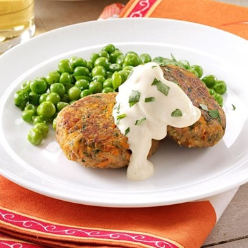

Tuna Cakes with Mustard Mayo
What is Tuna Cakes with Mustard Mayo?
These easy tuna cakes are ready in 15 minutes, pretty neat when you need to prepare a quick dinner! Made with simple pantry ingredients, canned tuna, mustard, panko breadcrumbs, herbs, and spices.
Ingredients
2 large eggs, beaten
3 tablespoons minced fresh parsley, divided
1/2 teaspoon seafood seasoning
2 cans (5 ounces each) light water-packed tuna, drained and flaked
1/2 cup seasoned bread crumbs
1/2 cup shredded carrot
2 tablespoons butter, divided
1 package (12 ounces) frozen peas
1/4 teaspoon pepper
1/3 cup mayonnaise
1 tablespoon Dijon mustard
1 teaspoon 2% milk
Instructions / How to Cook
1. In a large bowl, combine the eggs, 2 tablespoons parsley and seafood seasoning. Stir in the tuna, bread crumbs and carrot. Shape into 8 patties.
2. In a large skillet, brown patties in 1 tablespoon butter for 3-4 minutes on each side or until golden brown.
3. Meanwhile, microwave peas according to package directions. Stir in the pepper and remaining butter and parsley. Combine the mayonnaise, mustard and milk. Serve with tuna cakes and peas.